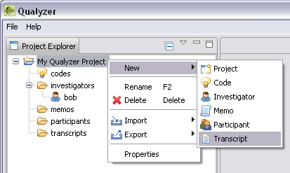

We're happy you decided to give us a try.
You must first create a project. Choose File | New ->
Project from the main menu (at the very top left of this window).
Fill in the dialog box with
information about you and your project (go ahead and do this
now). When you click "Finish", a project structure is created (you'll see
this as soon as you close this page).
You interact with Qualyzer by right-clicking on the icons in the project structure, and choosing your desired actions.
Help | Welcome
from the main menu.
Help | Report Issue to tell us about a problem.